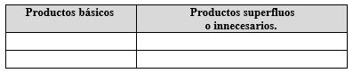

Experiencias

¿Qué vimos hoy?


Deportes
Viernes 24 de Abril
Responde las siguientes preguntas ya sea a través de un escrito, dibujo o esquema y guárdalas en tu carpeta de experiencias para que, en cuanto sea posible, se las entregues a tu maestra o maestro.
Del video: Iniciación a la percusión corporal
- ¿Cuántos sonidos puedes hacer con tu cuerpo?
Elabora una lista con tu familia, identifiquen todos los que puedan hacer, porque más adelante los utilizarán.
Del video: DANCE MONKEY – Body Percussion
- ¿Pudiste seguir la canción? Busca tu canción favorita y utiliza los sonidos que encontraste con tu familia para seguirla como en el video.
Del video: Percusión corporal 2012-13
- ¿Cómo se relaciona esta actividad con la educación física?
- ¿Qué habilidades utilizaste al realizar esta actividad?
Mientras debemos permanecer en nuestra casa, inventa una rutina nueva cada semana. Cuando regresemos a la escuela podrás compartirla con tus compañeros.
Video 1.- Iniciación a la percusión corporal
https://youtu.be/o5fezjEOdYk
Video 2.- DANCE MONKEY – Body Percussion
https://youtu.be/r3eVvmswdOc
Video 3.- Percusión corporal
https://youtu.be/GrFi8KpWT_4
Artes
Viernes 24 de Abril
Responde las siguientes preguntas ya sea a través de un escrito, dibujo o esquema y guárdalas en tu carpeta de experiencias para que, en cuanto sea posible, se las entregues a tu maestra o maestro.
- ¿Por qué crees que realizar ejercicios corporales es importante en el teatro?
- ¿Cómo se relacionan la imaginación, la forma y los materiales para crear personajes nuevos o de fantasía?
- Si nos imaginamos un personaje divertido o fantástico, ¿cómo sería?, ¿qué características tendría?, ¿cómo estaría vestido?, ¿de qué colores sería?
- ¿Cómo te imaginas que sería el personaje que imaginen tus amigas o amigos de la escuela?, ¿crees que todos pensarían en el mismo personaje fantástico?, ¿por qué crees que suceda eso?
- Crea cuatro personajes utilizando diferentes formas y colores para cada uno. ¿Te puedes imaginar una historia con esos personajes? Dibújalos en tu cuaderno y escribe tu breve historia también en tu cuaderno, cuando regreses a la escuela la podrás compartir con tus compañeras y compañeros.
Si en tu casa hay otro libro sobre el tema o tienes internet, explóralos. Así podrás saber más. Si no cuentas con estos materiales no te preocupes. En cualquier caso, platica con tu familia sobre lo que aprendiste, seguro les parecerá interesante y podrán decirte algo más.
Video 1.- Segunda clase virtual de Teatro para niños Parte 1
https://youtu.be/ateZzi98KVY
Video 2.- Segunda Clase virtual de Teatro para niños parte 2
https://youtu.be/iMN22jK-G6Y
Artes
Viernes 24 de Abril
Responde las siguientes preguntas ya sea a través de un escrito, dibujo o esquema y guárdalas en tu carpeta de experiencias para que en cuanto sea posible se las entregues a tu maestra o maestro.
- ¿Cuáles son las características principales para permitir el desarrollo de una representación de teatro, de danza o espectáculo de marionetas?
- ¿Cuáles son las características para que el público pueda disfrutar una representación?
- Además de los teatros convencionales ¿Qué otros espacios se pueden usar para representaciones teatrales? Piensa en un circo, en un teatro de marionetas, en un baile mexicano, en tu cantante favorito.
- En tu localidad cuando hay representaciones escénicas ¿En qué lugares se realizan? ¿Has asistido a alguna? Puedes elaborar un dibujo representando esa ocasión.
- En el segundo video vimos la reunión de música, danza, el circo, el teatro, todas ellas conforman las artes escénicas ¿En qué se parecen? ¿Cuál es tu preferida?
Video 1.- El teatro: definición, orígenes, características, elementos y estructura
https://youtu.be/CC_L00kWbxI
Video 2.- Alegría - Best of Music Videos by Cirque du Soleil
https://youtu.be/HGvg_H3yH18
Lenguaje
Viernes 24 de Abril
Responde las siguientes preguntas y guárdalas en tu carpeta de experiencias para que, en cuanto sea posible, se las entregues a tu maestra o maestro.
- ¿Qué pasaría si todos los conectores y nexos desaparecieran de los textos? Haz una prueba con algún texto que tengas cerca, también podrías intercambiarlos para cambiar el sentido del texto.
Haz un ejercicio en tu cuaderno, con algún párrafo que elijas. - ¿Cuál es la diferencia en usar las palabras “que”, “cuando”, “como” y “donde” con y sin acento?
- ¿Entrevista a varios miembros de tu familia, pregúntales cuántos y cuáles conectores conocen? Elabora una lista y haz categorías, los que sirven para ejemplificar causa/efecto, tiempo, enfatizar, conclusión, espacio o tiempo.
- Imagina que debes escribir una carta contándole a alguien cómo esperas celebrar tu próximo cumpleaños. Utiliza los nexos y conectores de tu lista para enriquecer lo que dices por escrito.
Si en tu casa hay otro libro sobre el tema o tienes internet, explóralos. Así podrás saber más. Si no cuentas con estos materiales no te preocupes. En cualquier caso, platica con tu familia sobre lo que aprendiste, seguro les parecerá interesante y podrán decirte algo más.
Video 1.- Los conectores de texto
https://youtu.be/0yK64bAjrOw
Video 2.- EL NEXO. Clases de nexos. Tipos de "que". Diferencias entre "donde", "como" y "cuando"
https://youtu.be/7uik4B5m6h4
Geografía
Viernes 24 de Abril
Responde las siguientes preguntas ya sea a través de un escrito, dibujo o esquema y guárdalas en tu carpeta de experiencias para que, en cuanto sea posible, se las entregues a tu maestra o maestro.
Del video: La historia del Consumo Consciente
- El consumo de bienes y servicios es necesario para la satisfacción de las necesidades humanas; aunque en ocasiones consumimos en exceso algunos productos. En una tabla como la que se muestra, enlista 10 productos de cada tipo que consumes o consumen en tu casa.

¿Qué tal si elaboras una máscara que represente alguna de las emociones del video? ¿De qué color sería?
¡Manos a la obra!
Del video: Consumo responsable
- De la actividad anterior, ¿cuál es la diferencia entre un consumo responsable y el consumo no responsable?
- Elabora una lista de los problemas que se generan con el consumo no responsable de productos y servicios en la vida de los seres vivos y el medio ambiente.
- Explica con tus palabras el papel que juega la publicidad con el consumo no responsable de productos y bienes. Ilustra con un ejemplo tu explicación.
- Elabora un folleto en el que señales algunas acciones que orienten el consumo responsable en tu escuela y hogar, coméntalo con tu familia.
Si en tu casa hay otro libro sobre el tema o tienes internet, explóralos. Así podrás saber más. Si no cuentas con estos materiales no te preocupes. En cualquier caso, platica con tu familia sobre lo que aprendiste, seguro les parecerá interesante y podrán decirte algo más.
Video 1.- La historia del Consumo Consciente
https://youtu.be/TISBM5i3MDI
Video 2.- Consumo Responsable
https://youtu.be/MHO3oUExoGE